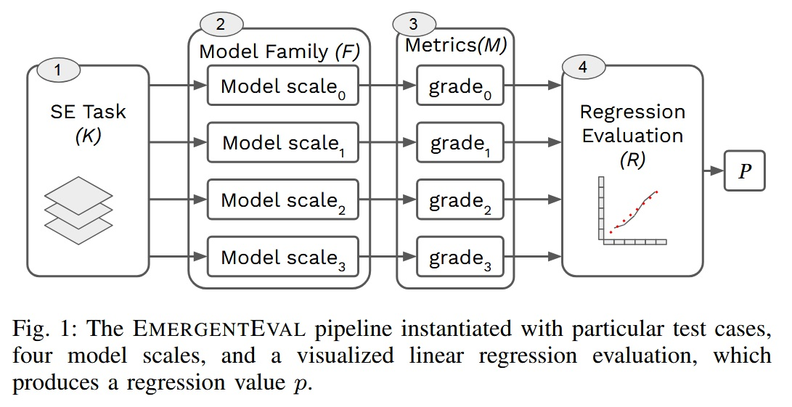
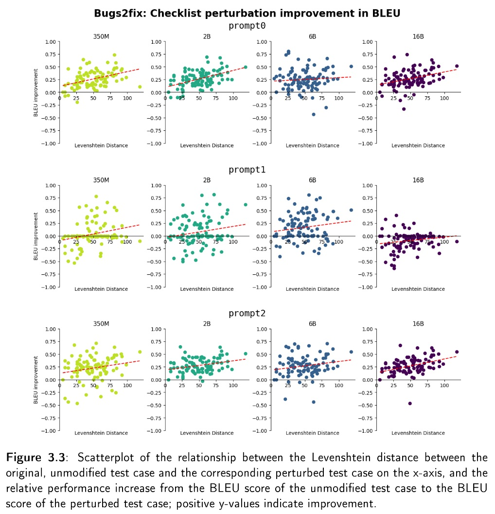
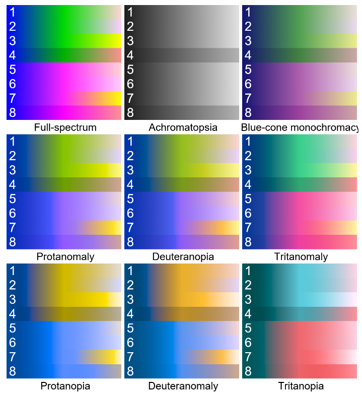
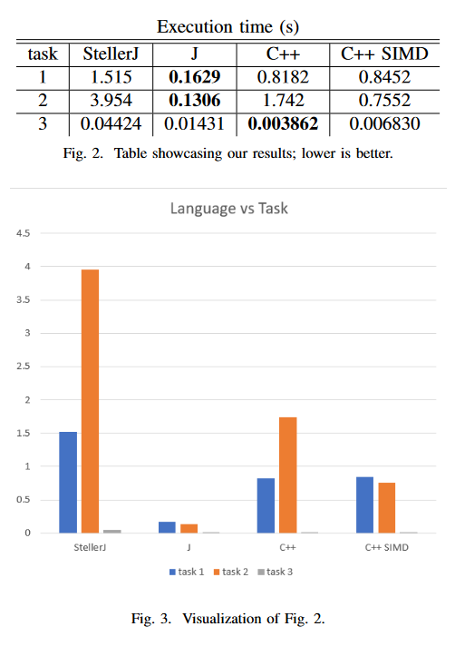
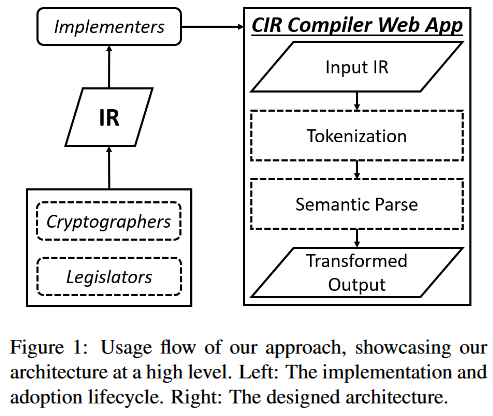

Papers
All papers distributed here (unless otherwise stated) licensed under CC BY 4.0
 , in accordance with William & Mary's Copyright ownership policy:
, in accordance with William & Mary's Copyright ownership policy:
Regarding works for which you have ownership, you have the option to assign licensing terms using free licenses from the not-for-profit Creative Commons.
Contents
All papers sorted reverse chronologically (most recent first), but organized here also by subject for convenience.
Computer Science
- Measuring Emergent Capabilities of LLMs for Software Engineering: How Far Are We?
- Emergent Capabilities of LLMs for Software Engineering
- Review and Reformulation of the Sea Lion Optimization Metaheuristic
- Research Artifact: Color Schemes
- StellerJ: A Compiled Approach to the Functional Array Language Paradigm
- CIR: Applying Cryptographic IR for Lawmakers Targeting AES
- Survey of Security in Programming Language Design
Philosophy
Measuring Emergent Capabilities of LLMs for Software Engineering: How Far Are We?
 November 26, 2024 ⋅ Computer Science Full text
Full text
Authors: Conor O'Brien, Daniel Rodriguez-Cardenas, Alejandro Velasco, David N. Palacio, Denys Poshyvanyk ⋅ Pages: 10 ⋅ Status: Complete
Abstract: The adoption of Large Language Models (LLMs) across multiple contexts has sparked interest in understanding how scaling model size might lead to behavioral changes, as LLMs can exhibit behaviors not observed in their smaller counterparts. Understanding these emergent capabilities is essential for advancing LLM development and improving their interpretability across diverse tasks. However, whether LLMs exhibit true emergence in the context of Software Engineering remains an unexplored topic, as most research has focused on NLP tasks. In this paper, we investigate the emergence of capabilities in the context of SE. We propose a model-agnostic pipeline for evaluating this phenomenon across three SE tasks: bug fixing, code translation, and commit message generation. More precisely, for each task, we present a case study instantiating our pipeline to analyze the emergence of capabilities in CodeGen1-multi across four scales ranging from 350M to 16.1B parameters. Our findings do not not provide evidence to support the idea of emergent capabilities resulting from scaling the model size in the selected set of tasks. We hope our results can pave the way to a more nuanced understanding of emergent capabilities of LLMs within the SE domain, guiding future research to focus on task-specific evaluations and the identification of alternative factors contributing to this phenomenon. Our work underscores the importance of task diversity in examining model behaviors and highlights potential limitations in transferring prior understandings of and approaches to emergence from NLP to Software Engineering.
Comments: A condensed version of my master's thesis I worked on in tight collaboration with the SEMERU Lab at William & Mary.
Emergent Capabilities of LLMs for Software Engineering
 August 2024 ⋅ Computer ScienceAuthors: Conor O'Brien ⋅ Pages: 64 ⋅ Status: Complete
Abstract: A growing interest for Large Language Models (LLMs) is how increasing their size might result in changes to their behavior not predictable from relatively smaller-scaled models. Analyzing these emergent capabilities is therefore crucial to understanding and developing LLMs. Yet, whether LLMs exhibit emergence, or possess emergent capabilities, is a contested question. Furthermore, most research into LLM emergence has focused on natural language processing tasks and models suited for them. We focus on investigating emergence in the context of software engineering, and recontextualize the discussion of emergence in the context of prior research. We propose a multifaceted pipeline for evaluating and reasoning about emergent capabilities of LLMs in any context and instantiate this pipeline to analyze the emergent capabilities of the CodeGen1-multi model across four scales ranging from 350M parameters to 16.1B parameters. We examine the model's performance on the software engineering tasks of automatic bug fixing, code translation, and commit message generation. We find no evidence of emergent growth at this scale on these tasks and consequently discuss the future investigation of emergent capabilities.
Comments: My master's thesis.
Review and Reformulation of the Sea Lion Optimization Metaheuristic
December 8, 2023 ⋅ Computer ScienceAuthors: Conor O'Brien ⋅ Pages: 2 ⋅ Status: Complete
Abstract: The Sea Lion Optimization Algorithm (SLnO) is a recent metaheuristic optimization algorithm suitable for optimizing given functions over given search spaces. Its biphasic behavior helps find minima in many circumstances, including unimodal and multimodal distributions. We present the most concise and best articulated formulation of SLnO to date, identify shortcomings in the original formulation, and summarize the strengths of SLnO.
Note, April 24, 2024: Fixed some typos in the paper, including in the title and abstract! Previously, “Metaheurestic”, e.g. The old version of the paper (with typos) is available here for posterity.
Research Artifact: Color Schemes
 November 7, 2023 ⋅ Computer ScienceAuthors: Conor O'Brien ⋅ Pages: 10 ⋅ Status: Complete
Comments: A research artifact documenting approaches to accessible color schemes, including novel findings and workings on Achromatopsia Linear Diverging Colormaps—colormaps which are diverging to full-spectrum vision, but transform to linear colormaps under achromatopsia vision. Part of my work on the ASTxplainer project.
StellerJ: A Compiled Approach to the Functional Array Language Paradigm
 May 16, 2023 ⋅ Computer ScienceAuthors: Conor O'Brien ⋅ Pages: 5 ⋅ Status: Complete
Abstract: StellerJ is a dialect of the functional array programming language J, targeted at LLVM. This paper examines the potential array languages like J have with high-performance computing by exploring the potential benefits of compiling instead of interpreting such languages. Compiling tacit structures involves dissecting the idioms used to construct them into compilable and analyzable fragments. The StellerJ implementation is compared for execution speed against equivalent programs in J, and in two approaches of programming in C++ (vectorized and unvectorized).
Comments: Writing the paper and corresponding compiler was an interesting experience, but getting intimately acquainted with LLVM to utilize it to its fullest advantage was too lofty a goal for me. In retrospect, I would have chosen an easier compile target, such as C.
CIR: Applying Cryptographic IR for Lawmakers Targeting AES
 May 15, 2023 ⋅ Computer ScienceAuthors: Conor O'Brien ⋅ Pages: 7 ⋅ Status: Complete
Abstract: The process of implementing cryptographic protocols to meet external standards is complex, time-consuming, and requires effective communication between legislators, cryptographers, and programmers. The implementation of the Advanced Encryption Standard (AES) involves referencing multiple specifications, testing against given examples, and passing NIST approval. While established, tested, and open-source cryptographic algorithm implementations are recommended, implementing new or obscure algorithms face similar issues as rolling one's own crypto. This paper aims to investigate several research questions related to the implementation of cryptographic protocols, the structure of a correct AES implementation, adapting the way legislators write law to an IR, ensuring the integrity of our static web application, and assessing the effectiveness of a well-designed IR skeleton. As a result of our research, we propose CIR 0.1, a prototype intermediate representation which empowers programmers to express partial code skeletons with varying possible levels of granularity. We showcase its syntax, as well as demonstrate and evaluate potential intermediate representations in CIR for writeability, legibility, and accuracy. We find CIR to be more flexible than shipping an implementation with a protocol, but neither general enough for application to any protocol, nor qualitatively excellent enough to contend against existing solutions and the status quo.
Comments: To quote my professor, “your project idea is very promising, only the execution lacked”. Unfortunately, it was an insanely busy semester, and I did not have sufficient time to adequately flesh out the idea.
Feeling Free and Moral Relevance
December 23, 2022 ⋅ PhilosophyAuthors: Conor O'Brien ⋅ Pages: 9 ⋅ Status: Complete
Summary: What determines if we are free? Free will has long been the subject of heavy debate, and useful for determining moral responsibility. I propose that an agent is morally responsible for an action and its reasonably foreseeable consequences if and only if that agent feels free in doing that action. In so claiming, I investigate what it means to feel free, and what we can reasonably expect an agent to foresee.
Survey of Security in Programming Language Design
December 9, 2022 ⋅ Computer ScienceAuthors: Conor O'Brien ⋅ Pages: 7 ⋅ Status: Complete
Abstract: Previous surveys of security vulnerabilities have predominately focused on static identification. This paper seeks to fill the relatively unexamined niche in security survey literature which examines the design of programming languages themselves. It examines the vulnerability features of particular programming languages, as well as general features of programming languages, and potential methods used to mitigate the issues arising thereof. I express the language design maxims of Security-convenience alignment, Security consciousness, and Programmer-first safety.